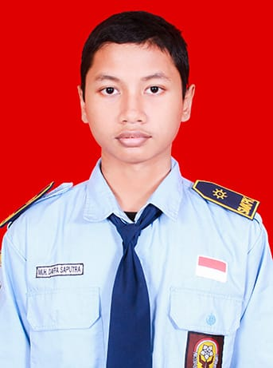
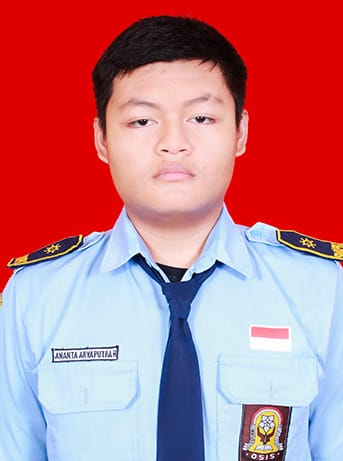

PROFIL DEVELOPER

Nama: Muhammad Daffa Saputra
SENIOR
Kelas: XI-TKJ1
Absen: 23

Nama: Ananta Arya Putra
JUNIOR
Kelas: XI-TKJ1
Absen: 4
PROFIL SEKOLAH
Visi
"Menjadi sekolah unggulan yang mencetak lulusan berkarakter, berkompeten, dan siap menghadapi era digital."
Misi
- Memberikan pendidikan berbasis teknologi dan inovasi.
- Meningkatkan keterampilan siswa melalui praktik industri.
- Membangun karakter disiplin dan bertanggung jawab.
- Menjalin kerja sama dengan dunia industri dan usaha.
Fasilitas
- Ruang kelas nyaman dan ber-AC.
- Laboratorium komputer dan jaringan.
- Bengkel teknik lengkap.
- Perpustakaan modern.
- Lapangan olahraga dan ruang ekstrakurikuler.